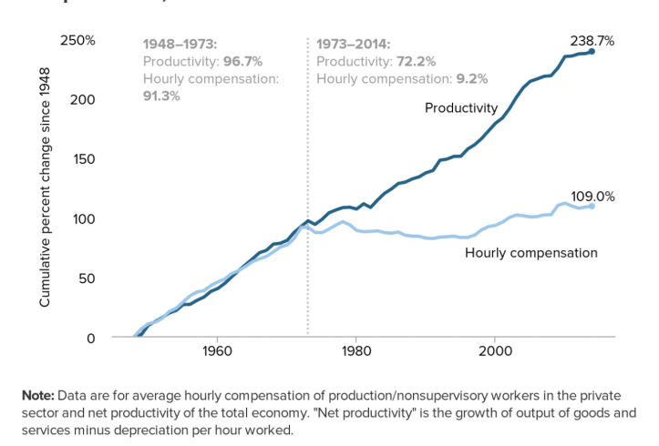
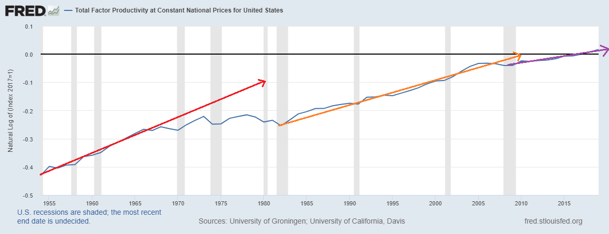

43 Productivity
43.1 Productivity-Pay Gap
Using prices to aggregate ‘output’ leads to bizarre problems. On the one hand, it causes ‘productivity’ to be equivalent to average hourly income. This means that any connection between ‘productivity’ and wages is circular. On the other hand, the same decision causes ‘productivity’ to be ambiguous. Our measure of ‘productivity’ depends on arbitrary choices about how to adjust for price change. As a result, productivity trends (like the one in Figure 1) are riddled with uncertainty.

‘Productivity’ is used by both major schools of economic thought. Neoclassical economists use productivity to claim that the distribution of income is just. They argue that in a competitive economy, workers get what they produce. Marxists, in contrast, use productivity to claim that the distribution of income is unjust. They argue that in a capitalist economy, workers receive less than they produce (because capitalists extract a surplus).
What’s interesting is that these two opposing theories commit the same sin. They define productivity in terms of income. Neoclassical economists do so explicitly, as I’ve described in this post. Marxists do so implicitly because they haven’t developed their own system of national accounts. Instead, Marxists who do empirical work use neoclassical measures of productivity.
The result of this circular definition is that the analysis of productivity is a sleight of hand. ‘Productivity’ is just income relabelled.
The ‘productivity-pay gap’ is a textbook example of this relabelling. It claims to show a growing gap between what workers ‘produce’ and what they get paid. But workers’ ‘productivity’ is actually measured in terms of income — the average hourly income.
Blair Fix: Debunking Productivity
Blair Fix: Productivity does not explain income
Productive individuals, productive society?
In the 1990s, geneticist William Muir conducted experiments on chickens to see what would improve egg-laying productivity. In one trial, he did exactly what the eugenicists recommend – he let only the most productive hens reproduce. The results were disastrous. Egg-laying productivity did not increase. It plummeted. Why? Because the resulting breed of hens was psychopathic. Instead of producing eggs, these “uber-hens” fought amongst themselves, sometimes to the death.
The reason this experiment did not work is that egg-laying productivity is not an isolated property of the individual hen. It is a joint property of the hen and her social environment.
In Muir’s experiment, the most productive hens laid more eggs not because they were innately more productive, but because they suppressed the productivity of less dominant chickens.
By selecting for individual productivity, Muir had inadvertently bred for social dominance. The result was a breed of bully chicken that could not tolerate others.
The lesson here is that in social animals, traits that can be measured among individuals (like productivity) may not actually be traits of the individual. Instead, they are joint traits of both the individual and their social environment. Here is evolutionary biologist David Sloan Wilson reflecting on this fact:
“Muir’s experiments … challenge what it means for a trait to be regarded as an individual trait. If by ‘individual trait’ we mean a trait that can be measured in an individual, then egg productivity in hens qualifies. You just count the number of eggs that emerge from the hind end of a hen. If by “individual trait” we mean the process that resulted in the trait, then egg productivity in hens does not qualify. Instead, it is a social trait that depends not only on the properties of the individual hen but also on the properties of the hen’s social environment”.
43.2 IPR Stagnation
Schwartz Abstract
Explanations for slow global growth (secular stagnation) correctly focus on income inequality and wage formation but are incomplete. They ignore the source of wages and fail to ask why a rising profit share has not produced more investment. Older but essential insights on stagnation from Keynes, Schumpeter and Veblen complement orthodox and post-Keynesian analyses to generate a more robust explanation based on the distributional conflict over profit among firms. These thinkers highlight the importance of corporate profit strategy and organizational structure for investment behavior. A politically mediated process of strategic interaction has transformed the old Fordist dual industrial structure into a tripartite structure composed of high profit volume firms with monopolies based on intellectual property rights (IPRs), physical capital-intensive firms protected by an investment barrier to entry, and low profit volume labor-intensive firms. Profit data from Compustat and Orbis show that IPR-based firms have a lower marginal propensity to invest. Other firms with smaller profit volumes forego investment from fear of creating excess capacity in a slow growth environment. High profit firms also tend to pay higher wages, creating income inequality. Changes in antitrust, employment and intellectual property law can remedy this situation.
Schwartz (2021) Global secular stagnation and the rise of intellectual property monopoly (Paywall)
43.3 TFP
Each period of productivity growth is bit slower than the last, meaning that the exponential growth rate is slowing down.

Adjusting for the changing utilitization of capital and labor the growth rate of “true” TFP has stagnated even more than the above graph would suggest. In other words, we’ve been using our machines and buildings and stuff more intensively, disguising some of the true TFP slowdown.
TFP is not the same thing as technology. The word “technology”, as we commonly understand it, includes stuff like computer chips, car engines, and procedures for making cement. Economists would broaden that definition to include things like business management techniques. But even with that broad definition, there’s plenty of stuff that can affect TFP that most of us would agree does not represent actual technology. For example:
If the government adds a bunch of burdensome regulations or taxes, that reduces TFP.
If people’s education level stops increasing, that lowers TFP growth.
If the population gets older, that can reduce TFP (since older workers are, on average, less productive).
If people spend more time goofing off at work, that can reduce measured TFP (since we’re overestimating the amount of labor input).
If people stop moving from less productive places to more productive places (for example, if housing restrictions drive up rents and keep workers away from superstar cities), that reduces TFP.
If a few big companies become more dominant, that can lower TFP, either via monopoly/monopsony power, or just by reducing dynamism in the economy.
If demand shifts from sectors where technology is progressing rapidly (for example, manufacturing) to sectors where it’s progressing slowly (e.g. services), that can reduce TFP growth, even if the rate of technological innovation in each sector remains exactly the same.Basically we’re seeing a whole lot of things happen that tend to reduce TFP growth but that have nothing to do with slowing technological progress! We can invent economically useful stuff just as brilliantly as in the past, but if the above stuff happens, TFP will still slow down.
In fact, in a recent book called “Fully Grown: Why a Stagnant Economy Is a Sign of Success”, the brilliant growth economist Dietrich Vollrath — whose excellent blog you should absolutely read — argues that most of the slowdown in TFP comes from slowing educational attainment, lower geographic mobility and economic dynamism, and and the shift from goods to services.
Tyler Cowen’s 2011 book The Great Stagnation (the most subtle and circumspect of the stagnationist books), he identifies non-technological factors as contributing to the stagnation, and he predicts that both technology and productivity growth will bounce back. Stagnationists would be well-advised to read that book.